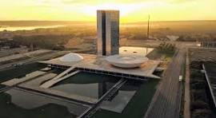

O Distrito Federal é a unidade federativa que abriga a capital do Brasil, Brasília. Localizado na região Centro-Oeste, o Distrito Federal é conhecido por sua arquitetura moderna e planejada, projetada pelo arquiteto Oscar Niemeyer e pelo urbanista Lúcio Costa. Brasília foi inaugurada em 1960 e foi criada para ser a nova capital do país, centralizando o governo e promovendo o desenvolvimento de toda a região. Além de ser o centro político do Brasil, o Distrito Federal também possui uma rica cultura, com museus, teatros e eventos culturais diversos. A cidade é rodeada por áreas verdes, parques e lagos, oferecendo um ambiente agradável para moradores e visitantes. Sua economia é bastante ligada ao setor público, mas também há crescimento em áreas como comércio, serviços e tecnologia. O Distrito Federal é um lugar único, que combina modernidade, história e uma forte identidade cultural brasileira.
